| 茶， 香叶，嫩芽， 慕诗客，爱僧家。 碾雕白玉，罗织红纱。 铫煎黄蕊色，碗转麹尘花。 夜后邀陪明月，晨前命对朝霞。 洗尽古今人不倦，将至醉后岂堪夸。 |
茶怎么会去“慕诗客，爱僧家”呢，此句所说应是“诗客慕，僧家爱” “碾雕白玉，罗织红纱”此句为押韵而倒装，本应为“白玉碾雕，红纱罗织”，用白玉雕成的茶碾，用红纱织成的茶筛。涉及唐人饮茶习俗中的两个程序，碾茶和筛茶。或认为是指当时制茶饼的腊面和包裹两道工序。 铫diào,一种小口圆腹，有柄有流的小锅，用于煮茶。 麹尘花qū：麹尘，酒曲所产生的细菌，色微黄如尘，此指碾碎了的茶叶粉末。花，茶沫。 第一句：点出的诗的主题；第二句：茶的本性，即味香，形美； 第三句：深爱爱慕； 第四、五句：茶艺； 第六句：饮茶习俗，不但夜晚要喝，早上也要喝； 第七句：茶的悠久历史和妙用，使人精神饱满，醒酒。 |
中国大部分地区是季风气候，春温、夏热、秋凉、冬寒，四季极为分明。因此，不同季节喝茶也应做相应调整，一般主张：春饮花茶，夏饮绿茶，秋饮青茶，冬饮红茶。
春季宜喝花茶，花茶可以散发一冬淤积于体内的寒邪，促进人体阳气生发;夏季宜喝绿茶，绿茶性味苦寒，能清热、消暑、解毒、增强肠胃功能，促进消化、防止腹泻、皮肤疮疖感染等;秋季宜喝青茶，青茶不寒不热，能彻底消除体内的余热，使人神清气爽;冬季宜喝红茶，红茶味甘性温，含丰富的蛋白质，有一定滋补功能。
◆春饮花茶
在春天的日子里，春风复苏，阳气生发，给万物带来了生机，但这时人们却普遍感到困倦乏力，表现为春困现象。
人喝花茶，能缓解春困带来的不良影响。花茶甘凉而兼芳香辛散之气，有利于散发积聚在人体内的冬季寒邪、促进体内阳气生发，令人神清气爽，可使“春困”自消。
花茶是集茶味之美、鲜花之香于一体的茶中珍品。“花引茶香，相得益彰”，它是利用烘青毛茶及其他茶类毛茶的吸味特性和鲜花的吐香特性的原理，将茶叶和鲜花拌和窨制而成，以茉莉花茶最为有名。这是因为，茉莉花香气清婉，入茶饮之浓醇爽口，馥郁宜人。高档花茶的泡饮，应选用透明玻璃盖杯，取花茶3克，放入杯里，用初沸开水稍凉至90℃左右冲泡，随即盖上杯盖，以防香气散失。二三分钟后，即可品饮，顿觉芬芳扑鼻，令人心旷神怡。
◆夏饮绿茶
夏日炎热，骄阳似火，人在其中，挥汗如雨，人的体力消耗很多，精神不振，这时以品绿茶为好。因绿茶属未发酵茶，性寒，“寒可清热”，最能去火，生津止渴，消食化痰，对口腔和轻度胃溃疡有加速愈合的作用。
而且它营养成分较高，还具有降血脂、防血管硬化等药用价值。这种茶冲泡后水色清冽，香气清幽，滋味鲜爽，夏日常饮，清热解暑，强身益体。绿茶中的珍品，有浙江杭州狮峰的龙井，汤色碧绿，清香宜人，被誉为“中国绿茶魁首”；江苏太湖碧螺春，茶色碧翠嫩绿，香气浓郁；安徽黄山毛峰，茶味清香。
冲泡普通绿茶，可取90℃开水泡之；高级绿茶和细嫩的名茶，其芽叶细嫩，香气也多为低沸点的清香型，用80℃开水冲泡即可，冲泡时不必盖上杯盖，以免产生热闷气，影响茶汤的鲜爽度。
◆秋饮青茶
秋天，天高云淡，金风萧瑟，花木凋落，气候干燥，令人口干舌燥，嘴唇干裂，中医称之“秋燥”，这时宜饮用青茶。青茶，又称乌龙茶，属半发酵茶，介于绿、红茶之间。色泽青褐，冲泡后可看到叶片中间呈青色，叶缘呈红色，素有“青叶镶边”美称，既有绿茶的清香和天然花香，又有红茶醇厚的滋味，不寒不热，温热适中，有润肤、润喉、生津、清除体内积热，让机体适应自然环境变化的作用。
常见的乌龙茶名品有福建乌龙、广东乌龙、台湾乌龙，以闽南安溪铁观音、闽北武夷岩茶为著名。但乌龙茶类很多以茶树品种而分，有铁观音、奇兰、梅占、水仙、桃仁、毛蟹等。乌龙茶习惯浓饮，注重品味闻香，冲泡乌龙茶需100℃沸水，泡后片刻将茶壶里的茶水倒入茶杯里，品时香气浓郁，齿颊留香。
◆冬饮红茶
冬天，天寒地冻，万物蛰伏，寒邪袭人，人体生理功能减退，阳气渐弱，中医认为：“时届寒冬，万物生机闭藏，人的机体生理活动处于抑制状态。养生之道，贵乎御寒保暖”，因而冬天喝茶以红茶为上品。
红茶甘温，可养人体阳气；红茶含有丰富的蛋白质和糖，生热暧腹，增强人体的抗寒能力，还可助消化，去油腻。红茶类在加工过程中经过充分发酵，使茶鞣质氧化，故又称全发酵茶。茶鲜叶经过氧化后形成红色的氧化聚合产物——茶黄素、茶红素、茶褐素，这些色素一部分溶于水，冲泡形成了红色茶汤。
传统工夫红茶名品有湖红、宜红、宁红、闽红、台红、祁红，以安徽祁门县的祁红为著名。冲泡红茶，宜用刚煮沸的水冲泡，并加以杯盖，以免释放香味。英国人普遍有饮“午后茶”习惯，常将祁红和印度红茶拼配，再加牛奶、砂糖饮用。在中国一些地方，也有将红茶加糖、奶、芝麻饮用的习惯，这样既能生热暖腹，又可增添营养，强身健体。
茶叶指茶树的叶子或芽。可以用开水直接泡饮，依据品种和制作方式以及产品外形分成六大类。茶叶饮品被誉为"世界三大饮料之一"。茶叶含儿茶素、胆甾烯酮、咖啡碱、肌醇、叶酸、泛酸等成分，可以增进人体健康。
平时多喝一些清新的茶饮，对减缓和治疗口臭大有裨益，例如很多天然的花草茶，薄荷茶等都是消除口臭不错的天然茶饮。河北建国中医院的李秋杰教授建议大家可以常喝以下的茶饮。
1、桂花茶。对于治疗口臭有较好效果。
2、桂菊茶。该方法适用于胃热上蒸型口臭患者，有芳香清胃的效果。
3、单味茶。取25g绿茶冲成浓茶饮用，嚼食茶叶，适用于胃热上蒸型口臭患者，有清除胃热的效果。
4、茉莉薄荷茶。
5、石榴茶。取一两只石榴，将石榴子取出榨汁，加入凉开水饮用，每天一剂，对于口臭并且伴随咽痛的患者有很好的疗效，有清热除臭的功能。
6、荸荠茶。有清热消积治疗口臭的作用，适合口臭并且目赤溲黄患者饮用。
7、丝瓜茶。有清热解毒，凉血除臭的作用，适合口臭并且便秘的患者服用。
8、薄荷茶。适合口臭并且有食滞腹胀患者服用。
9、藿香茶。尤其适用于口臭颇重，口中黏腻的患者。
10、竹叶茶。有清热解毒，清除口臭的作用，适用于因为湿热、肝郁引发的口臭患者，同时伴随咽喉痛者治疗效果尤其好。
茶诗
品翁宛于水中立，
十香烟袅青莲馨。
茶饮罢舟玉壶揭，
城厥韵存友若临。
茶树1 ↓
{kind=link}
茶树2 ↓
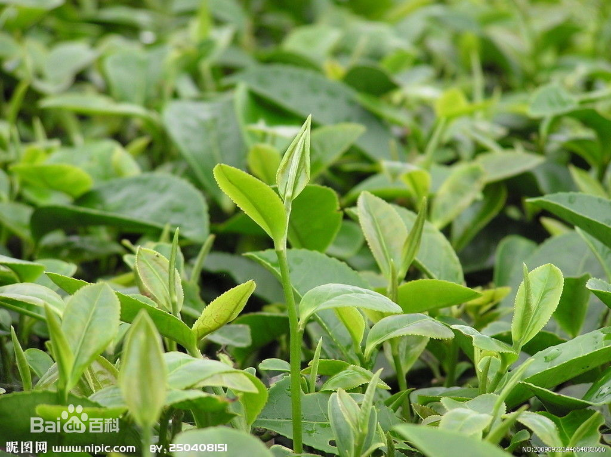{kind=link}
茶树3 ↓
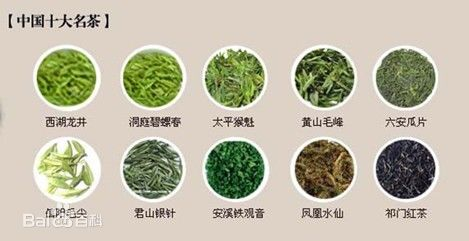{kind=link}
茶树4 ↓
{kind=link}
君山银针 ↓
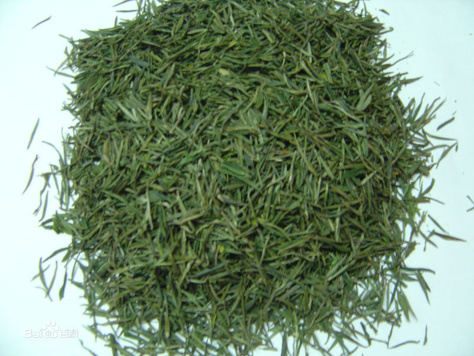{kind=link}
君山银针2 ↓
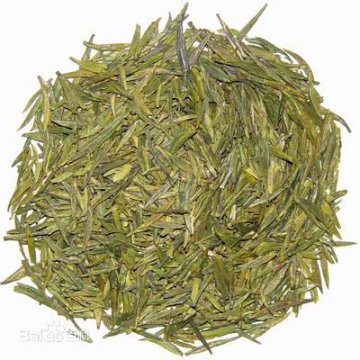{kind=link}
安溪铁观音 ↓
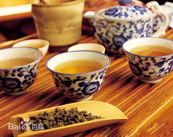{kind=link}
六安瓜片 ↓
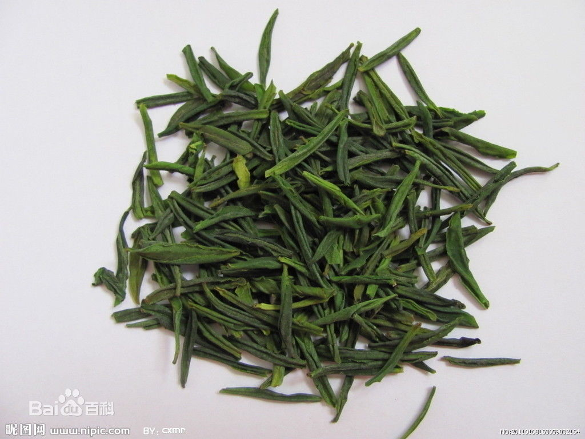{kind=link}
六安瓜片2 ↓
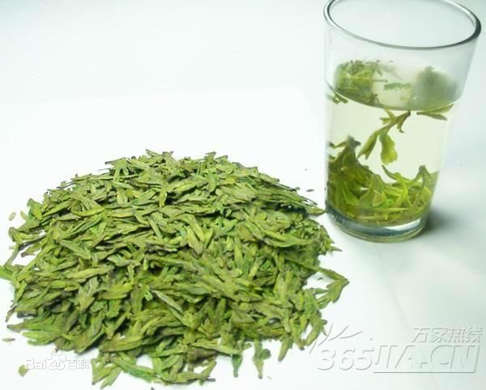{kind=link}
岳西翠兰 ↓
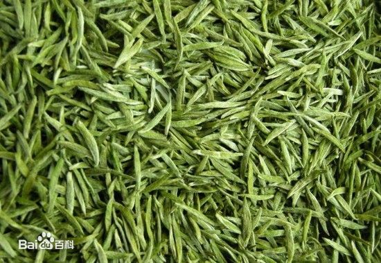{kind=link}
信阳毛尖 ↓
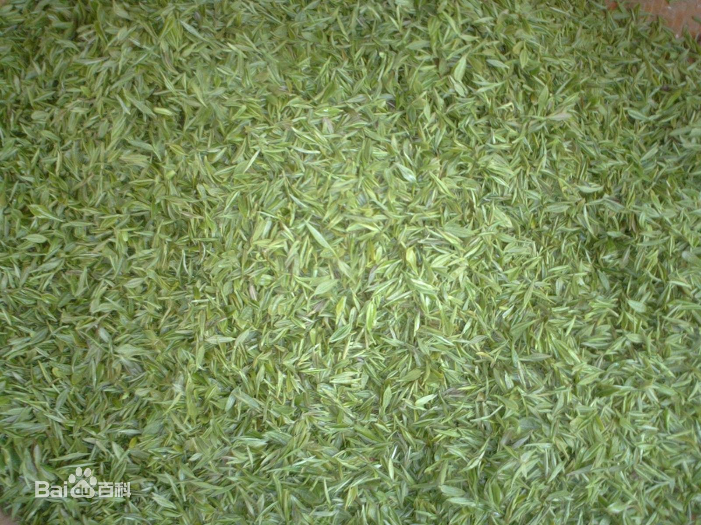{kind=link}
乌龙茶 ↓
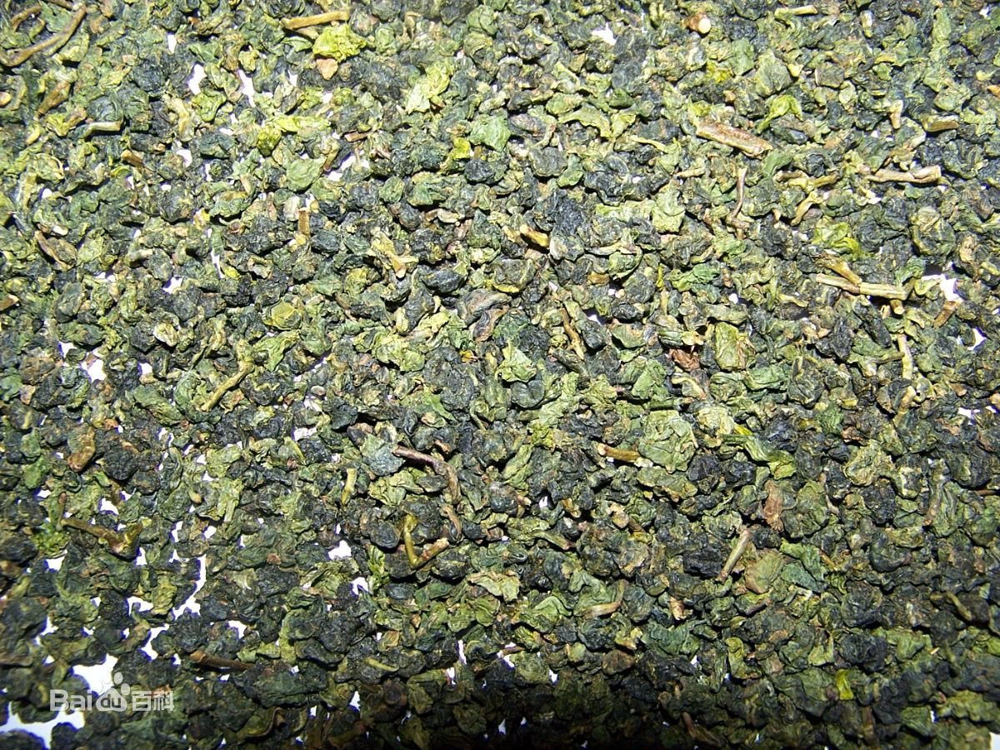{kind=link}
乌龙茶2 ↓
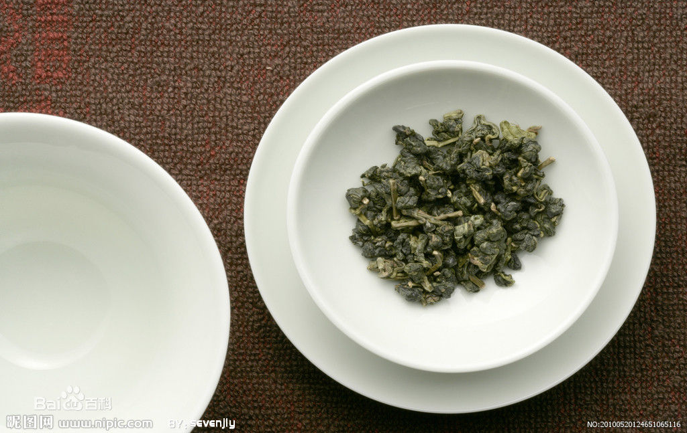{kind=link}
白茶 ↓
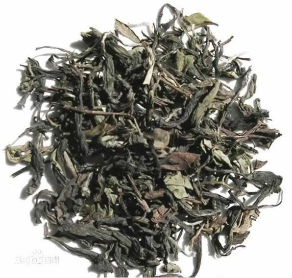{kind=link}
白茶2 ↓

黑茶 ↓
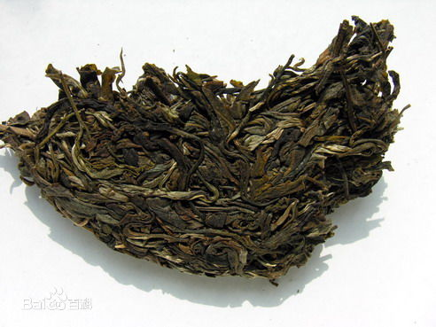{kind=link}
武夷岩茶 ↓
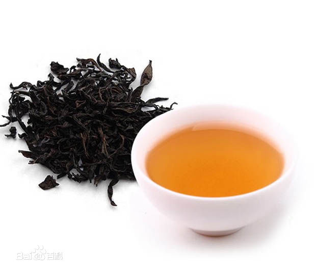{kind=link}
武夷岩茶2 ↓
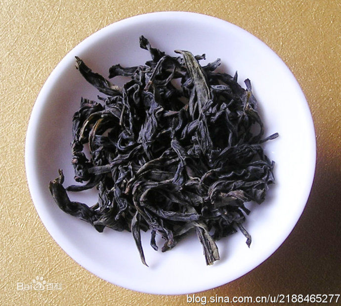{kind=link}